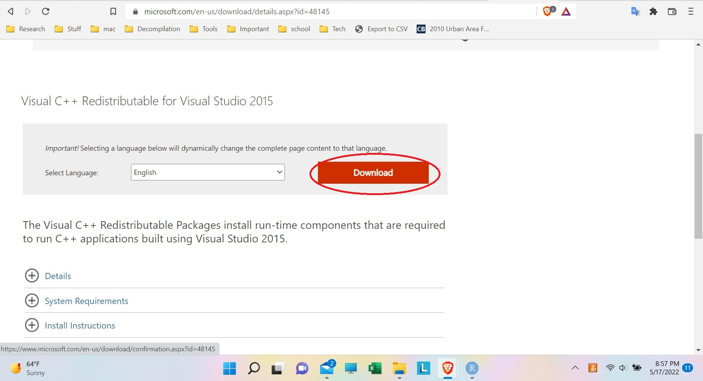
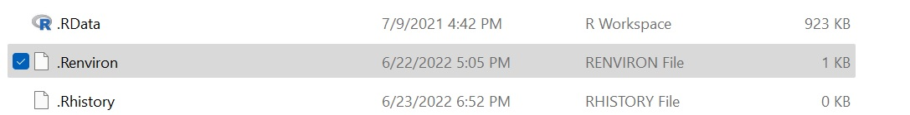
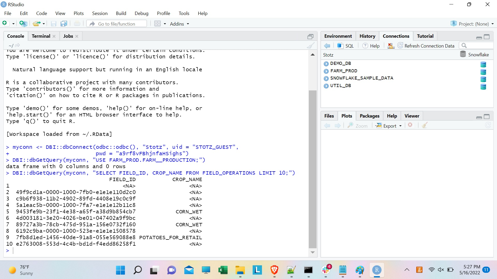

ODBC
ODBC.RmdStep 1: Download the Visual C++ 2015 Restributable
The Microsoft Visual C++ 2015 Redistributable is a software library needed in order to install the Snowflake ODBC driver. First, go here to download it.
{width=768px}
Then, when it asks, make sure to download the “X64” version:
Choose X64 Download
Finally, run the installer:
Run VC++ 2015 Redistributable Installer
Step 2: Downloading ODBC software
ODBC is the way R can connect to the snowflake database. For Windows, it can be downloaded here (with instructions).
Download the snowflake64_odbc-<version>.msi file:
Download the MSI file from the Snowflake website
And run it:
Run the installer
Step 3: Set up ODBC
Go to the Windows start menu search bar, and search for “ODBC”.Then open up “ODBC Data Sources (64-bit)”:
Search for ODBC
Once in the ODBC window, go to the “Drivers” tab and make sure that Snowflake shows up there:
Find Snowflake driver
Now, go to the “System DSN” tab, and click the “Add” button to add the Stotz data source:
Add new data source
Now, set the driver that we are configuring the data source for to “SnowflakeDSII”:
Select the Snowflake driver
Now, we can set the options for the Snowflake data source so we can connect to the Snowflake database. Set the Data Source to “Stotz”, the user to “STOTZ_GUEST”, the server to “ut67101.us-east-2.aws.snowflakecomputing.com”, and the warehouse to “FIREHOSE”. Then, click “OK”:
Configure the Snowflake data source
Now, back on the System DSN window, click “OK”. This will save your Stotz data source and close the ODBC configuration window.
Save changes to ODBC
Step 4: Setting up username and password
To securely store the username and password, create an .Renviron (no file extension) file in the Documents folder if it does not already exist:
 Open the file with Notepad (or create the file with Notepad if it does not exist), and set the MESONETGDH_UID and the MESONETGDH_PWD with the username and password for the Snowflake database:
.Renviron credentials
Step 5: Testing the code in R
Finally, we can test the code in R. First, install the DBI and ODBC packages, which allow R to connect to the Snowflake database through ODBC:
install.packages(c("DBI", "odbc"))Now, try connecting to the database:
myconn <- DBI::dbConnect(odbc::odbc(), "Stotz", uid=Sys.getenv("MESONETGDH_UID"),
pwd=Sys.getenv("MESONETGDH_PWD"))Then, try using the farm production database (this should return a data frame with zero rows and columns, one can also use dbExecute() instead of dbGetQuery() if a returned table is not needed):
DBI::dbGetQuery(myconn, "USE FARM_PROD.FARM__PRODUCTION;")Now, try pulling the data from the database (this should return a data frame with 10 rows):
DBI::dbGetQuery(myconn, "SELECT FIELD_ID, CROP_NAME FROM FIELD_OPERATIONS LIMIT 10;")Here is a screenshot showing querying the database in R: 